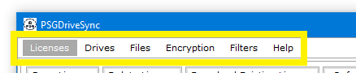

|

|
The application menu bar contains of Six main tabs or menu items, namely
- Licenses - used to interact with application licenses. Main functionalities that it provides is:
- Add License
- Save License
- Delete License
- Download Existing License
- Drives - used to interact with local and remote (google) drives. Main functionalities that it provides is:
- Add Remote Drive
- Add Local Drive
- Mount or Unmount Drive
- Dock or Undock Drive
- Save Drive
- Delete Drive
- Change Drive's AutoSync and Color Settings
- Files - used to interact with files and folders from both local and remote (google) drives. Main functionalities that it provides is:
- Real time file operation
- Creation of New File or Folder
- Cut, Copy and Paste of Files and Folders
- Deletion of File or Folder
- Rename of File or Folder
- Properties of File or Folder
- Encryption of File or Folder
- Decryption of File or Folder
- Comparison of File or Folder
- Search For Encrypted File(s) in Folders
- Sending Files or Folders to Filters Tab so they can be added as Filtered File(s)
- Setting up of Sync Items and Sync Containers used for Sync Operations
- Encryption - used to interact with encryption keys saved in the application to encrypt and decrypt files. Main functionalities that it provides is:
- Add Key
- Save Key
- Delete Key
- Filters - used to interact with Filters and Filtered Files in the application which provide the functionality of Conditional Syncing. Main functionalities that it provides is:
- Add Filter
- Save Filter
- Delete Filter
- Find Filtered Files Which Belong To A Filter
- Save Filtered Files
- Delete Filtered Files
- Test Filters Attached To Filtered File(s)
- Help - used to provide diagnostics and additional information about the application. Main functionalities that it provides is:
- Change Master Key
- Link to Help Documentation
- Privacy Policy
- End User License Agreement
- Credits & Thanks To People
- Information on the Developer of the Application i.e Me
- Test Filters Attached To Filtered File(s)
|